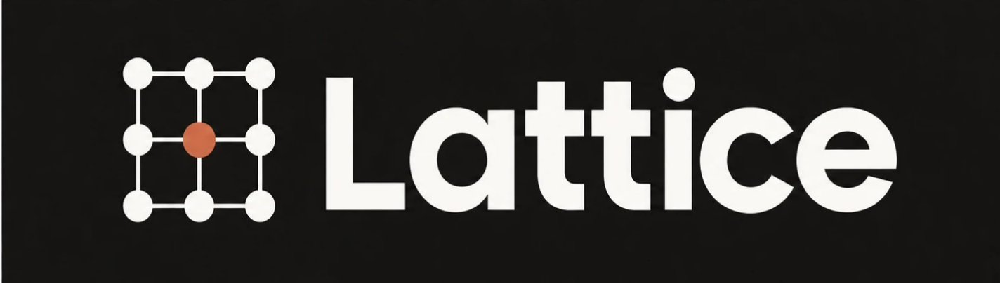
The mechanics bankers, private-equity associates and hedge-fund analysts pay Macabacus and think-cell for, rebuilt in plain VBA with a PowerShell build. No licence server, no telemetry. Installs per user in a minute.
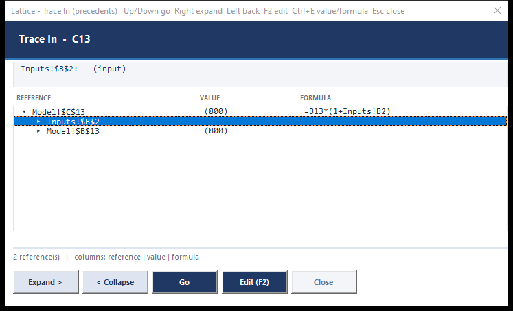
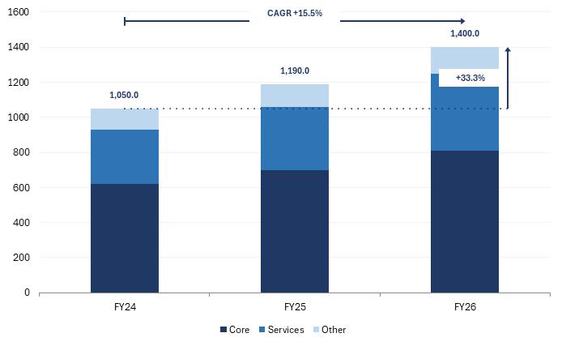
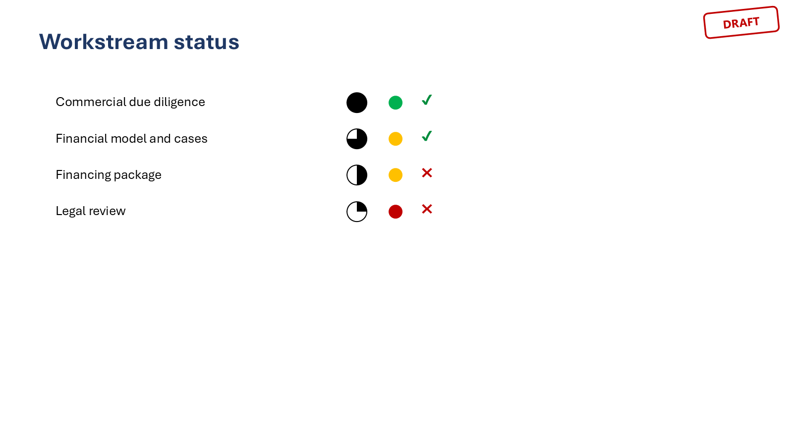
Every deal team runs on the same hundred gestures: colour the inputs blue, jump to the precedent, flip the sign, paste the table into the deck and refresh it before the meeting, align the boxes, stamp DRAFT on the title. Macabacus and think-cell sell those gestures. Lattice rebuilds them.
Nothing was decompiled or copied. The public feature lists and documentation screenshots of the commercial products were the specification; the implementation is original VBA, organised around the three things a working analyst actually touches all day: the model, the link into the deck, and the slide itself.
Lattice was written by one person directing an AI coding agent over a handful of sessions, each round installed and swept through COM-driven tests against real Excel, PowerPoint and Word before being used on live work. The repository history records what landed when, including the mistakes: a keytip Office silently refused, a hidden Excel instance that hijacked imports, a chart label that lost its name.
One Lattice tab per app, opened with AltK in Excel and AltL in PowerPoint and Word. Everything Lattice draws follows one visual system: a navy and azure palette, tiled icons, windows with a title band and column headers, report sheets with an accent line and a frozen header, a Settings dialog per app.
Personal-use quality on Microsoft 365 for Windows. Not every corner of the commercial tools is covered; page 7 lists the gaps.
Earnings day: paste the KPI table into the note, refresh it after the model update, flip the sign on the bridge, walk the EPS build with Ctrl+[ before the call.
IC memo week: run Base, Upside and Downside into one table, football field for the valuation page, DRAFT on every slide until the partner signs off.
Pitch at 2 a.m.: Auto Align the boxes, conform the title fonts, agenda and page numbers in one go, Deck Check before it goes to the printer.
The jump keys do what Capital IQ's tracer and Macabacus's trace window do, and the window closes on Enter so the next key is F2.
Ctrl[ goes to the precedent of the active cell, Ctrl] to its dependent, CtrlShiftEnter returns. When several candidates exist a picker opens; your arrow keys move through it while Excel follows.
References are resolved explicitly through workbook and sheet, so cross-sheet jumps and sheet names with spaces work from any window.
Highlight hard-codes CtrlShiftK, formula flow CtrlShiftL, select errors, inconsistent formulas and inputs, arrows on and off.
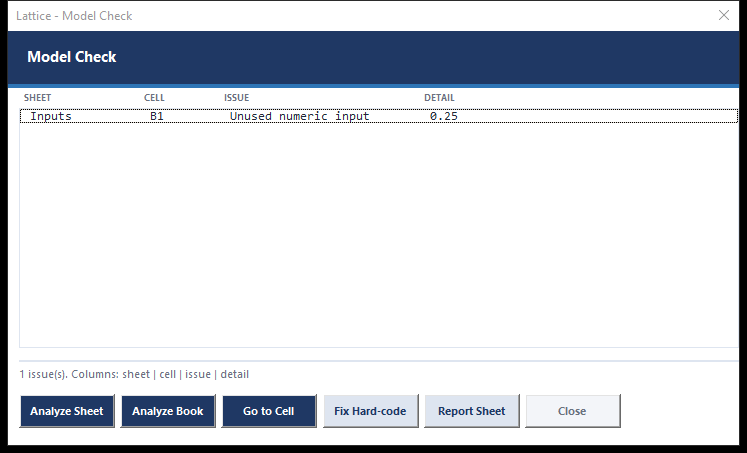
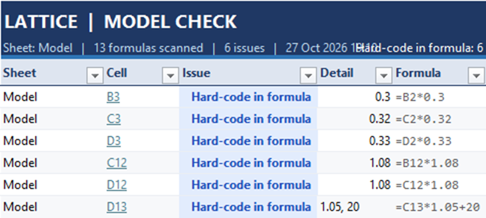
Hard-codes inside formulas (a 1.05 in a growth line), formulas that break the pattern of their row, #REF! and #DIV/0!, errors masked by IFERROR, numeric inputs nothing reads.
When a cell has several precedents, a small window lists them with values and formulas. Arrow keys move Excel live; Enter or a double-click goes there and closes it.
The same tree in the other direction: who consumes this cell, down to the outputs linked into the deck. CtrlShift] opens it.
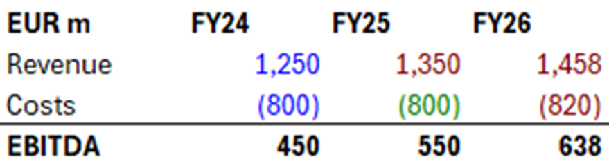
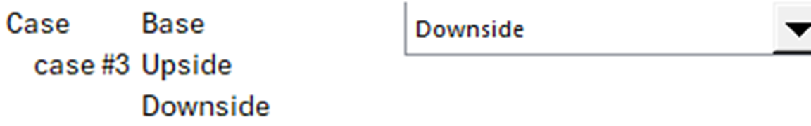
| Output | Cell | Base | Upside | Downside | Upside vs Base | Downside vs Base |
|---|---|---|---|---|---|---|
| Revenue | Model!B17 | 1,250 | 1,400 | 1,050 | +12.0% | -16.0% |
| EBITDA | Model!B18 | 350 | 434 | 231 | +24.0% | -34.0% |
| Net debt / EBITDA | Model!B19 | 3.1x | 2.6x | 4.4x | -16.1% | +41.9% |
| IRR | Model!B20 | 18.0% | 26.0% | 7.0% | +44.4% | -61.1% |
| MOIC | Model!B21 | 2.3x | 3.1x | 1.4x | +34.8% | -39.1% |
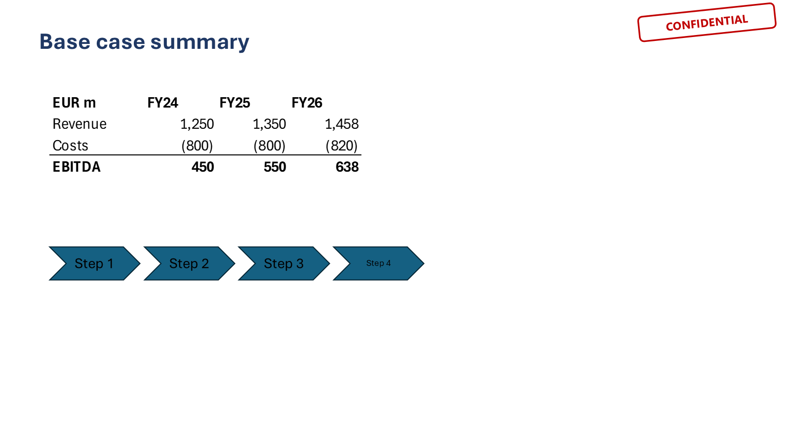
Match Width, Height or Size replaces the selected shape in the deck in place; new items land inside the import margin.
Picture or table at the cursor, CtrlAltW; refresh selection or document.
Each link carries the workbook, sheet, range and a defined name, so rows can move. When a V2 of the model is open instead of V1, one prompt repoints every link. When the file moved, a picker. In airplane mode nothing is opened from disk.
The black-font pass runs inside Excel through Application.Run instead of cell by cell over COM: a 40×10 block refreshes in about a second, and the refresh binds to your visible Excel even when a hidden instance exists.
A number or a year inside a title can be tied to a cell: the sentence keeps its wording, the figure refreshes with the deck. Explorer pane lists every link; Highlight Links marks them in slide sorter.
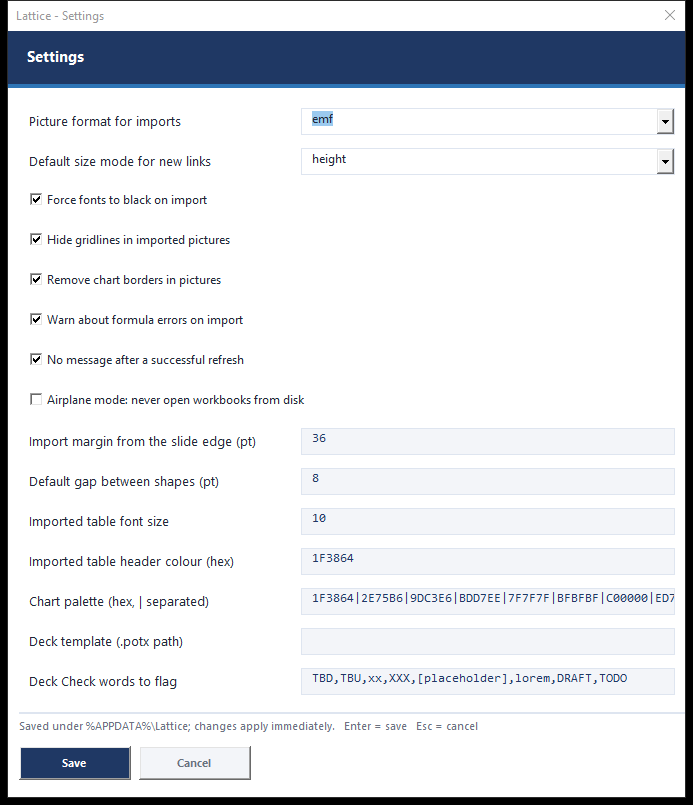
Align to the first shape or the slide, distribute, set gaps, same width / height / size, stretch, swap, nudge, arrange in a grid, Auto Align (snaps a loose selection to its implied rows and columns), align to the body area, arrange inside a container, stack, z-order, Select Match (same fill, font or size), convert to picture, crop to slide, remember and apply a position.
Keytips: AltL then 1–6 for the six alignments, 7 8 distribute, 9 0 Q same width, height, size.
Every link is read from its tags; the workbook is found among all running Excel instances before anything is opened from disk; the range is copied inside Excel with gridlines hidden and fonts forced black; the picture is pasted over the old one keeping position, size mode, z-order and name; the model's calculation mode and colours are restored. Formula errors in the range are reported once at the end.
Harvey balls, chevrons and chevron processes, timeline, numbered circles, sticky notes, callouts, rounded rectangles, arrows, brackets, braces, lines. Placed next to the selection, themed.
Save the look of a shape and apply it to a selection or the whole deck; colour cycles, hex and theme colours, a format painter that survives across slides; text tools for case, bullets, superscripts and double spaces.
A Slide Library with Slide Links: insert a slide from the library and later pull the library's version back, or push your edited slide into it. Master Shapes keeps your own shape library.
Run it before a deck leaves the building: every finding is listed with its slide number and selects the shape when clicked.
Sections become divider slides and a table of contents; rename or reorder a section and the contents page follows. Pagination writes "n / N" or your own format and skips the title and dividers if you ask. Deck Tools can print one PDF per section for the data room.
Where the three overlap, Lattice is a peer. Where think-cell's chart engine starts, Lattice stops on purpose.
| Capability | Macabacus | think-cell | Lattice |
|---|---|---|---|
| Formatting cycles and AutoColor | Yes | – | Yes |
| Precedent / dependent jumps, trace window | Yes | – | Yes |
| Hard-code and consistency audit | Yes | – | Yes |
| Model generators (LBO, DCF, returns, debt, sensitivity) | Partial | – | Yes |
| Case drop-down and case runner | No | – | Yes |
| Excel to PowerPoint / Word links with refresh | Yes | Partial | Yes |
| Match size / replace in place on export | Yes | – | Yes |
| Version-aware refresh (V1 vs V2 open) | Partial | – | Yes |
| Shape alignment, distribution, Auto Align | Yes | – | Yes |
| Agenda / table of contents, pagination | Yes | Yes | Yes |
| Slide library and slide links | Yes | – | Yes |
| Styles applied across a deck | Yes | – | Yes |
| Harvey balls, stickers, stamps | Partial | Yes | Yes |
| Chart totals, CAGR and difference arrows | Partial | Yes | Yes |
| Waterfall, football field, stacked with totals | Yes | Yes | Yes |
| In-slide chart engine with editable datasheet | – | Yes | No |
| Mekko and Gantt charts | No | Yes | No |
| Automatic label placement on charts | – | Yes | No |
| Workbook diff (two versions) | Yes | – | Partial |
| Settings dialog | Yes | Yes | Yes |
| Mac support | Yes | Yes | No |
| Licence server, telemetry, subscription | Yes | Yes | No |
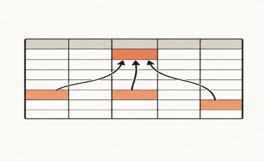
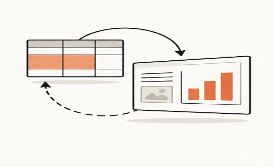
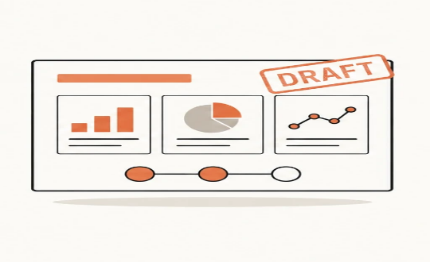
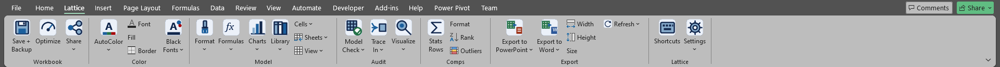
src\excel, src\ppt, src\word hold the modules and form code; src\shared is compiled into PowerPoint and Word. UserForms are built from code at build time, so the repository holds no binary form files. ribbon\*.xml are the customUI definitions.
build\build.ps1 drives Office through COM: imports the modules, builds the forms, compiles through the VBE with a watcher thread that reads and dismisses the compile dialog, saves the add-ins and injects the ribbon XML and icons with System.IO.Packaging. Static lints catch reserved identifiers, one-letter procedures, one-line If procedures and declarations after a procedure.
tests\ drives real instances with a dialog watcher: command sweeps, semantic checks of the formula tools, the stray-Excel-instance scenario, refresh and version prompts, the Trace window by mouse and keyboard, the case runner, chart annotations, stickers, and UI captures that never steal focus.
Excel shortcuts live in %APPDATA%\Lattice\excel_shortcuts.txt and regenerate the PDF manual. Settings are key/value pairs next to it, edited from the Settings dialog. Nothing phones home.
AltK Excel AltL PowerPoint, Word. Office keeps T, E, I, O, V and D for its 2003 menus, which is why the tab is not Alt+T.
Workbook diff as a styled report, an Explorer pane for Word, and a native-chart route for Mekko and Gantt only if it can be done honestly.
On GitHub at github.com/AshWatter/Lattice. Source, build, tests, figures, this guide and the shortcut manual travel together, and all of them regenerate from scripts.
Specified and driven by Chiltern Capital Management; written with Claude; verified by Excel, PowerPoint and Word themselves.
Reserved identifiers: VBA is case-insensitive, so a variable called nExt or lib is a keyword. One-letter procedures collide with loop variables. One-line If procedures swallow their End Sub. Declarations after a procedure compile into "Variable not defined" three screens away from the cause. All four are caught by a regex before Office is even started.